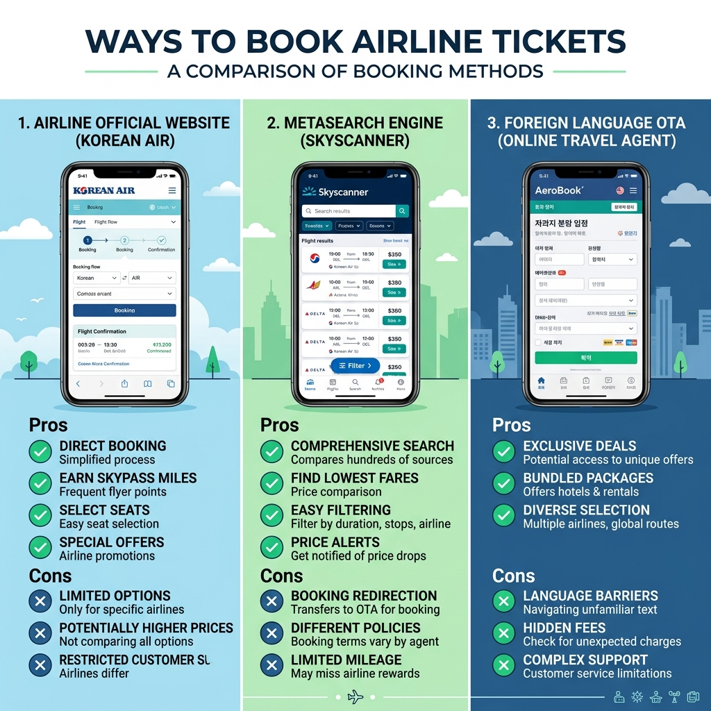

해외여행 국내 항공사 발권 vs OTA·해외발권 — 환불 쉽고 싼 곳 어디인가
📌 핵심 요약
해외여행 항공권을 살 때 국내 항공사 공식 홈페이지에서 살 것인지, OTA(온라인 여행사)를 이용할 것인지, 아니면 해외 발권을 고려할 것인지 — 많은 분들이 어디가 싸고 어디가 편한지 헷갈립니다.
단순히 "가격만 비교"가 아닌, 환불·일정 변경·분실 시 대응까지 종합적으로 고려해야 올바른 선택이 됩니다. 이 글에서 각 발권 방식의 장단점을 한 번에 정리합니다.
항공권 발권 방식 비교 검색 중 / AI 제작 이미지
① 발권 방식 세 가지 — 공식·OTA·해외발권 뭐가 다른가
항공권 발권 방식은 크게 세 가지로 나뉩니다.
1. 항공사 공식 홈페이지 직접 발권: 대한항공·아시아나·진에어·제주항공 등 항공사 자체 홈페이지에서 직접 구매하는 방식. 문제 발생 시 항공사에 직접 연락 가능.
2. OTA(온라인 여행사) 발권: 카약·스카이스캐너·트립닷컴·네이버항공·익스피디아 등 여러 항공사 요금을 한 화면에서 비교하고 구매하는 방식. 최저가 비교에 유리하지만 문제 발생 시 중간자를 거쳐야 함.
3. 해외발권: 출발지를 해외로 설정해 더 저렴한 운임을 찾는 고급 방법. 예를 들어 인천→방콕 항공권이 방콕→인천 구매보다 저렴한 경우가 있음. 단, 여정 출발지와 실제 탑승 출발지가 달라 첫 구간 미탑승 위험 존재.
② 공식 홈페이지 직접 발권의 장단점
장점:
첫째, 환불·날짜 변경이 가장 간편합니다. 홈페이지나 앱에서 직접 처리할 수 있고, 항공사 콜센터와 직접 통화 가능합니다.
둘째, 마일리지 적립이 확실합니다. 항공사 공식 채널 발권 시 회원 마일리지 적립이 즉각 처리됩니다. OTA를 통해 구매할 경우 마일리지 적립 여부 및 적립률이 달라질 수 있습니다.
셋째, 항공사 프로모션 혜택이 적용됩니다. 공식 채널에서만 제공하는 얼리버드·주중 특가·할인 코드 등이 있습니다.
단점:
가격이 OTA보다 비쌀 수 있습니다. 특히 복수 항공사가 운항하는 노선에서는 OTA의 가격 비교 기능을 활용하는 것이 훨씬 저렴한 경우가 많습니다.
③ OTA(온라인 여행사)의 장단점 — 카약·스카이스캐너·트립닷컴
장점:
가격 비교가 즉각적입니다. 여러 항공사의 요금을 한 화면에서 비교해 최저가를 빠르게 찾을 수 있습니다. 동일 항공편도 OTA마다 가격이 다를 수 있어 여러 곳을 비교하는 것이 유리합니다.
환승 편도·왕복·복합 여정 조합이 편리합니다. A 항공사로 가고 B 항공사로 돌아오는 조합을 자동으로 찾아줍니다.
단점:
환불·변경 처리가 복잡합니다. 환불 요청 시 OTA → 항공사 → OTA로 돌아오는 구조라 처리 기간이 길고, 일부 OTA는 수수료를 추가로 부과합니다. 특히 저가항공사 + OTA 조합은 환불 거절 사례가 종종 보고됩니다.
⚠️ 주의: 트립닷컴·클룩 등 일부 OTA는 환불 처리 속도가 느리고 고객센터 연결이 어렵다는 후기가 많습니다. 가격이 조금 싸더라도 환불 정책과 고객 후기를 먼저 확인하세요.
| 비교 항목 | 항공사 직접 발권 | OTA 발권 |
|---|
| 가격 경쟁력 | 보통~높음(프로모션 시) | 낮음~최저(비교 조합) |
| 환불 용이성 | 직접 처리, 빠름 | 중간 단계, 느릴 수 있음 |
| 날짜 변경 | 앱·웹 직접 가능 | OTA 통해야 함 |
| 마일리지 적립 | 확실 | 항공사·OTA 따라 다름 |
| 고객 지원 | 항공사 콜센터 직통 | OTA 대기 후 연결 |
④ 해외발권이란 무엇인가 — 절약 방법과 위험
해외발권은 항공권 운임이 출발 국가에 따라 달라지는 구조를 이용하는 방법입니다. 예를 들어 인천→도쿄보다 도쿄→인천 구간이 더 저렴한 경우, 도쿄발 왕복을 구매해 인천~도쿄 구간 일부를 '포기'하는 방식입니다.
가능한 절약 금액은 노선·시즌에 따라 천차만별이며, 5~30%까지 차이가 나는 경우도 있습니다.
주의사항:
- Hidden City Ticketing 문제: 항공사 약관에서 이를 금지하는 경우가 있으며, 마일리지 계정 정지·탑승 거부 등의 제재를 받을 수 있습니다.
- 수하물 문제: 위탁 수하물이 최종 목적지까지 자동으로 이동되는 구조에서 중간에 내리면 수하물을 찾을 수 없습니다.
- 항공사가 여정을 자동 취소할 수 있습니다.
해외발권은 왕복 전체를 정상 탑승하되, 출발 국가 운임 차이만 이용하는 합법적 방식으로 이용해야 하며, 위에 언급한 우회 방식은 권장하지 않습니다.

항공사 직접·OTA·해외발권 비교 / AI 제작 이미지
⑤ 마일리지 극대화 전략 — 어디서 사야 적립이 많나
마일리지 중심으로 발권을 고민하는 분들을 위한 정리입니다.
대한항공·아시아나 공식 발권: 탑승 마일리지 100% + 구매 마일리지(신용카드 적립)가 모두 적용됩니다. 마일리지 누적을 목표로 하는 분이라면 공식 채널 발권이 가장 유리합니다.
OTA 발권: 대부분의 경우 마일리지 적립은 탑승 클래스 기준 항공사 기준을 따릅니다. 단, 일부 저가 특별 운임권은 마일리지 적립 제외 또는 감소 적립 구간에 해당할 수 있으므로 발권 전 반드시 확인하세요.
제휴 카드 추가 적립: 특정 항공사 제휴 신용카드로 결제 시 구매금액 기준 추가 포인트가 쌓입니다. 이 포인트를 마일리지로 전환하면 총 적립량이 크게 늘어납니다.
⑥ 네이버항공·카카오항공 — 국내 메타서치 활용법
네이버 항공과 카카오항공은 OTA가 아닌 메타서치 서비스입니다. 여러 OTA와 항공사 직판 가격을 한 번에 비교해주고, 원하는 곳으로 연결해줍니다.
활용 방법:
첫째, 네이버항공에서 최저가 일정·항공사 조합을 먼저 파악합니다.
둘째, 해당 항공사 공식 홈페이지에서 동일 조건 가격을 확인합니다. 공식 홈이 같거나 더 저렴하다면 직접 발권이 유리합니다.
셋째, OTA만 더 저렴하다면 해당 OTA의 고객 후기·환불 정책을 확인한 후 결정합니다.
💡 꿀팁: 스카이스캐너의 "가격 알림" 기능을 활용하면 특정 구간 요금이 내려갈 때 자동으로 알림을 받을 수 있습니다. 출발 2~3개월 전부터 알림을 설정해두면 최저가 구간을 놓치지 않을 수 있습니다.
⑦ 항공권 환불 — 어디서 샀느냐에 따라 천지 차이
항공권 환불 정책은 발권 채널에 따라 크게 달라집니다.
항공사 직접 발권:
- 항공사 앱·웹에서 직접 취소 신청 가능
- 환불금 카드 원복 기간: 통상 7~14 영업일
- 취소 수수료: 운임 클래스별로 상이, 공식 약관 확인 필요
OTA 발권:
- OTA 고객센터에 취소 요청 → OTA가 항공사에 취소 요청 → 항공사 환불 처리 → OTA가 수령 후 고객에게 환불
- 중간 단계가 많아 환불까지 3~8주 걸리는 경우도 있음
- OTA별 추가 수수료(1~5만 원대) 부과 가능
결론: 가격 차이가 크지 않다면 환불 처리 편의성 측면에서 항공사 직접 발권이 유리합니다. 특히 여행 계획이 유동적이거나 일정 변경 가능성이 있는 분들은 직접 발권을 권장합니다.
⑧ 어떤 경우 OTA를 써야 하나 — 실전 판단 기준
OTA 사용이 유리한 경우와 그렇지 않은 경우를 정리합니다.
OTA 사용 권장 상황:
- 여러 항공사 운항 노선에서 최저가 조합 탐색 시
- 얼리버드·프로모션 특가가 OTA 전용인 경우
- 복합 여정(다른 항공사 연결 편) 조합이 필요할 때
항공사 직접 발권 권장 상황:
- 환불·날짜 변경 가능성이 있는 여행
- 마일리지 적립이 중요한 경우
- 비수기·평일 여행으로 가격 차이가 크지 않은 경우
- 항공사 멤버십 특가나 프로모션 코드 보유 시
⚠️ 주의: 해외 OTA에서 저가 운임을 구매할 경우, 결제 통화와 환전 수수료를 반드시 확인하세요. 원화 결제(DCC)를 선택하면 수수료가 추가로 발생합니다. 해외 OTA에서는 현지 통화(USD, EUR 등)로 결제하는 것이 환율상 유리합니다.
⑨ 저가항공 특이사항 — 수수료 구조 주의
제주항공·티웨이·진에어 등 국내 저가항공은 기본 운임 외에 수하물·좌석 지정·식사 등이 별도 요금입니다.
함정 1: 기본 요금만 보고 싸다고 생각했다가 수하물(15kg 기준 1~3만 원 추가)·좌석 지정(1~2만 원) 등을 더하면 대형 항공사와 비슷하거나 더 비싸지는 경우가 있습니다.
함정 2: 저가항공 OTA 발권 시 환불 조건이 "환불 불가" 운임인 경우가 많습니다. 여행자 보험을 반드시 가입하고, 항공사 환불 약관을 확인하세요.
실전 비교 방법: 저가항공 최종 결제 금액(기본 운임 + 수하물 + 좌석 + 세금·유류할증료)을 대형 항공사 운임과 비교하면 실제 차이를 정확히 알 수 있습니다.
⑩ 발권 방식 선택 — 한 줄 정리
항공권 발권 방식 선택에 있어 결론을 단순하게 정리합니다.
가격 최우선, 환불 가능성 낮음 → OTA 메타서치로 최저가 찾기
마일리지 적립 + 환불 유연성 필요 → 항공사 공식 홈페이지
복합 여정·다른 항공사 연결 → OTA, 단 환불 정책 사전 확인 필수
해외발권 → 항공사 약관 확인 후 정식 방법으로만 이용
어떤 방식이든 결제 전 환불 가능 여부, 수수료 구조, 마일리지 적립 여부 세 가지를 반드시 확인하는 습관을 들이는 것이 가장 중요합니다.
#항공권발권비교
#OTA항공권
#해외여행항공
#스카이스캐너
#항공권환불
#마일리지적립
#저가항공
#해외발권
#네이버항공
#항공권싸게사는법